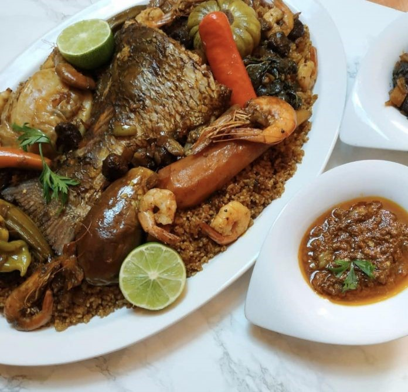

THIEBOU DIEUN
Thiébou dieune ou riz au poisson à la tomate
Je vous propose aujourd’hui la recette détaillée du riz au poisson rouge. C’est une nouvelle version avec des crevettes et une queue de poisson bien frais. En 2018, j’avais posté une recette bien détaillée du riz au poisson rouge. j’avais expliqué brièvement les deux méthodes de préparation du thiébou dieune à savoir : le fait de frire les poissons dans de l’huile et la deuxième méthode celle que font les saint-Louisiennes qui consiste à mettre directement les poissons sans cuisson préalable après avois mis de l’eau. Pour en savoir plus et découvrir l’historique du plat, l’ancienne version est disponible ici Sans plus tarder passons à la réalisation de cette nouvelle recette.
La recette:
Pour 5 à 6 personnes
Durée : environ 2 h
Coût : cher (si on veut acheter un bon poisson)
Difficulté : moyenne voire difficile car plat un peu technique
Ingrédients :
1 gros Poisson ( queue )5 gousses d’ail
1 piments frais
1 poivron vert
1 piments vert
1 cuillère à café de sel
1 petit tas de persil
¼ L d’huile
1 oignon
200 g de tomate concentrée
1 morceau de yët (mollusque séché)
1 morceau de guédj. Guédj beurre de préférence
2 feuilles de laurier
1 carotte
1 chou
1 manioc
1 aubergine
1 potiron
50 g de feuille de bissap blanc 1 kg de riz 250 g de crevette 1 citron
Pour la sauce Diaga :
250 g de poisson haché1/2 verre d’huile
1 cuillère à soupe de tomate concentrée
250 g d’oignon
1/2 cuillère à café de piment en poudre
1 pincée de sel et de poivre
1 cuillère à soupe de vinaigre
Pour la sauce piment :
5 piment fais
100 g de piment en poudre
1 pincée de sel et de poivre
½ cuillère à soupe de vinaigre